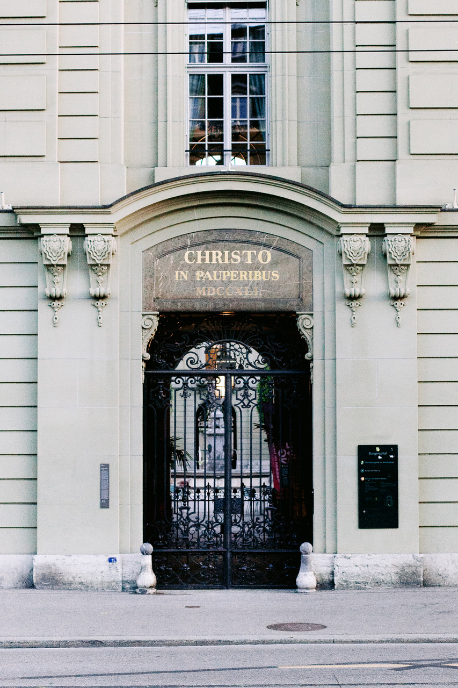

Ich sehe sie beinahe täglich, seit ich an der Theologischen Fakultät der
Universität Bern studiere, denke und arbeite. Ich sehe sie, wie sie dort
graziös steht, gar anmutig thront. Ob es ihre Schönheit ist, die
anziehend auf mich wirkt? Oder ist es ihre Verwegenheit, die mich
irritiert, dort zu stehen und zu thronen, als wüsste sie nicht, wie es
um die Welt steht, als liesse sie das Leid und Elend unserer Zeit
unberührt? Wenn direkt vor ihr ein Randständiger unserer Gesellschaft
eine Geschäftsfrau um einige Rappen bittet, Letztere aber ohne Antwort
zielstrebig weitergeht, wirkt ihr Thronen beinahe anmassend. Ich sehe
sie beinahe täglich, seit ich an der Theologischen Fakultät der
Universität Bern studiere, denke und arbeite. Sie ist mir zu einer
treuen Begleiterin geworden. Sie wurde mir zum Korrektiv, zur kritischen
Stimme in den fragmentarischen Versuchen theologischen Denkens. Sie hat
mich gelehrt, warum, um mit Walter Benjamin zu sprechen, uns die
Hoffnung nur um der Hoffnungslosen willen gegeben ist.
Ich sehe sie beinahe täglich, seit ich an der Theologischen Fakultät der
Universität Bern studiere, denke und arbeite – sie, die in goldenen
Lettern am Hauptportal des ehemaligen Berner Burgerspitals stehende
lateinische Inschrift «CHRISTO IN PAUPERIBUS». Es ist dieser lateinische
Zu- und Anspruch – «Dem Christus unter den Armen!» –, der das
Burgerspital bis heute zu einem theologisch bedeutsamen Ort der Schweiz
macht.
Der Berner «Armenpalast»: Selbstdarstellung und/oder Fürsorge?
Bern, seit 1983 auf der Liste der Weltkulturgüter der UNESCO, ist wohl die bedeutendste Barockstadt der Schweiz. So werden alle, die mit dem Zug anreisen, gleich von zwei historischen Monumenten begrüsst: der Heiliggeistkirche und dem ehemaligen Burgerspital. Die Existenz eines Spitals ist seit 1228, knapp dreissig Jahre nach dem Gründungsdatum der Stadt Bern 1191, bezeugt, jedoch noch ausserhalb der Stadt und erst ab 1345 hinter dem Haupttor, dem späteren Christoffelturm. Geleitet wurde diese Institution durch die Brüder des Ordens vom Heiligen Geist. Weil dieser sich seit seiner Gründung 1180 auf die Betreuung von armen, alten und kranken Menschen spezialisiert hatte, erhielten die Brüder von der städtischen Obrigkeit den Auftrag, sich im neuen Spital um die Bedürftigen der eigenen Stadt und um arme Reisende zu kümmern – unentgeltlich. Während im mittelalterlichen Spitalkloster Pilger_innen und Bettler_innen für eine Nacht beherbergt wurden, durften städtische Armengenössige bis zu ihrem Tod dort bleiben. Der kostenlose Unterhalt wurde durch Spenden und Pfründen von Zünften und wohlhabenden Familien ermöglicht. Wer nun meint, dass die Armen, Betagten und Kranken hier äusserst bescheiden hospitalisiert wurden, irrt. So wird das Burgerspital bis heute im Volksmund als Berner «Armenpalast» bezeichnet. Denn gemessen an anderen Spitälern war der Lebensstandard bemerkenswert hoch, was sich in besonderer Weise am prachtvoll konzipierten Bau zeigt – etwa die inhaltliche Ausstattung im Régencestil oder die 140 Kachelöfen zur Beheizung der Zimmer. Dazu gehört auch die goldene Inschrift am Hauptportal.
Die zwei barocken Monumente am Hauptbahnhof Bern: das Burgerspital und die Heiliggeistkirche – heute verbunden durch ein modernes Glasdach, dem sog. Baldachin. (Bild: Matthias Käser)
Das Hauptportal war ursprünglich mit zwei geradezu lässig hingelagerten Bären ausgestattet, die das Staatswappen umarmten. Diese Bekrönung wirkte wohl allzu pittoresk, weshalb der Bildhauer J.F. Funk (1706–1775) die Schildhalter durch graziösere Frauenfiguren ersetzte: Bis 1783 thronten über der Inschrift die Personifikationen der Liebe und Barmherzigkeit. Wegen Salpeterfrass und «Steinkrebs» mussten diese nach mehrmaligen Rettungsversuchen entfernt werden. Heute sieht mensch nur noch die Inschrift. Im Tympanon (Schmuckfläche im Bogenfeld des Portals) des Segmentgiebels ruht schliesslich über Füllhörnern – als Sinnbilder des Überflusses – das Nest des Pelikans, der sich die Brust aufreisst, um die verdurstenden Jungen mit seinem Herzblut zu tränken – ein religiöses Symbol für die Opferliebe Christi.Sieht mensch davon ab, dass der Bau auch einer Art Selbstdarstellung der vermögenden Stadt diente, ferner diese Einrichtung über eine Spinnstube verfügte, in der Frauen auf einem Schwingstuhl fixiert und mit Ruten, Männer gar mit einem Stierenschwanz geschlagen wurden, und das Burgerspital ab dem 19. Jahrhundert zunehmend von gut begüterten Burger_innen als Alters- und Pflegeheim genutzt wurde und die Kranken und Armen darum von den oberen, repräsentativeren Räumen in die unteren verdrängt wurden, so sind die architektonischen Finessen dieses Baus gleichwohl Ausdruck der Fürsorge, eine gleichsam baulich inszenierte Illustration des Caritas-Gedankens.
Hauptportal des ehemaligen Berner Burgerspitals. (Bild: Matthias Käser)
Werke der Barmherzigkeit – auch heute noch?
Die vordringlichste Sorge galt im Leben von mittelalterlichen Menschen, und damit einer von Religion über die Massen geprägten Gesellschaft, dem Nachher, dem Jenseits. Um das eigene Seelenheil zu sichern, war das Ausüben von tätiger Nächstenliebe zur Gründungszeit des Burgerspitals unverzichtbar. Gemäss den sieben Werken der Barmherzigkeit (vgl. Mt 25,31–46) – Hungrige nähren, Durstige tränken, Nackte bekleiden, Fremde beherbergen, Kranke pflegen, Gefangene besuchen und Tote begraben – war das Burgerspital ein Ort multifunktionaler Versorgung und Fürsorge. Das war auch dann noch der Fall, als das Schreckensgespenst, dass einem bei Verweigerung fürsorgerischer Dienste das ewige Höllenfeuer drohte, mit der Reformation endlich verflogen war. Von nun an gab es kein geistliches Pflegepersonal mehr. Es waren Mägde und Knechte, die sich um das Wohl der Menschen im Burgerspital sorgten. Menschen also, die selbst der untersten Bevölkerungsschicht angehörten. An diesem Ort begegneten sich Bedürftige und Randständige aller Art: Alte und Waisen, Behinderte und Bettler_innen, Pilger_innen und ledige Schwangere – und mittellose Kranke. Was diese heterogene Nutzer_innenschaft einte, waren Armut und/oder ein fehlendes soziales Netz bzw. fehlende Akzeptanz innerhalb der damaligen Mehrheitsgesellschaft. Diesen Menschen einen Ort zu geben, war das Ziel dieser Institution. Das Burgerspital kümmert sich noch heute um das Wohl von Menschen, die Hilfe, Zuspruch und Ruhe benötigen. Im Burgerspital haust heute das Berner Generationenhaus: ein sozio-kulturelles Begegnungszentrum, das Ratsuchenden und Notleidenden kostenlose Unterstützungsangebote anbietet. Und die Alterseinrichtung «Burgerspital am Bahnhof» sorgt sich um Betagte und für Kinder wurde eine Tagesstätte eingerichtet. Doch was macht das Burgerspital als heute entsakralisierter Ort, und insbesondere seine Inschrift am Hauptportal, zu einem theologisch bedeutsamen Ort? Wer sind unsere Armen, unter denen wir angeblich Christus antreffen können? Oder anders gefragt: Wie wird dieser überhaupt sichtbar?
Gegen Armut! Für mehr tätige Hoffnung?
In der schweizerischen Gesellschaft gibt es die augenscheinliche Armut: die Obdachlosen, die auf den Strassen sind, die Jugendlichen, die ohne Arbeit herumhängen und die Bettler_innen, die von Tür zu Tür gehen und an den Strassenecken sitzen. Diese Armut mag eine besonders schreckliche sein, weil sie physisch existentiell, unmaskiert und überall zu sehen ist. Doch sie ist nicht die einzige Armut. Armut beginnt nicht erst dort, wo Menschen kein Geld, keine Arbeit und kein Dach über dem Kopf haben. Armut herrscht gerade auch dort, wo Menschen unter Lebensbedingungen begraben werden, die unter dem Niveau der Gesamtgesellschaft liegen. Armut ist nicht nur die Unversorgtheit von Menschen an materiellen Lebensgütern wie Geld, Wohnung, Kleidung, Arbeit. Sie ist auch die Unversorgtheit an immateriellen Lebensgütern wie soziales Ansehen, gesellschaftliche Akzeptanz, Integration und Mitspracherecht, Bildungsmöglichkeiten und Räume der Freiheit zur individuellen Entfaltung. Gerade in dieser letztgenannten Hinsicht bleibt die Inschrift am Berner Burgerspital fremd, weil sie etwas beansprucht, das so nicht, oder nur bedingt Wirklichkeit ist. Wenn Christus als Chiffre für die Fülle jüdischer und jüdisch-christlicher Traditionen und Geschichten, die von Hoffnungen und Verheissungen zeugen, steht – und so lese ich den lateinischen Zuspruch aus heutiger Sicht –, und sodann die Armen die ersten Adressat_innen und Empfänger_innen des Evangeliums sind, dann ist dieser Zuspruch erst einmal widersprüchlich. Denn wann immer sich individueller und kollektiver Hass in Form von Intoleranz, Unsichtbarmachung und Diskriminierung über Menschen ergiesst, weil sie angeblich die ‹falsche› Hautfarbe, das ‹falsche› Geschlecht, die ‹falschen› Papiere und den ‹falschen› Glauben haben, oder weil sie nicht lieben und begehren, wie Konventionen und Gesetze es vorschreiben, oder weil sie sich nicht im Körper zurechtfinden, in dem sie geboren wurden, dann bleibt diese Inschrift nicht nur fremd, sie wird gleichsam ad absurdum geführt. Dann ist nichts von der in Jesaja 35 bezeugten Verheissung zu spüren, geschweige denn zu sehen, dass bildlich gesprochen allen Menschen ein Ort zusteht, in dem Lahme springen, Blinde sehen und Stumme sprechen. Diese Verheissung bleibt fremd, wie auch ihre implizite Bezeugung in der Inschrift des Burgerspitals fremd bleibt. Aber könnte es nicht sein, dass die Theologie – in Universität und Kirche – einer säkularen Öffentlichkeit die Fremdheit ihrer Geschichten schuldet? Und dass einen solchen Beitrag die Inschrift leistet? Das Berner Burgerspital wäre dann nicht so sehr deshalb ein theologisch bedeutsamer Ort, weil die Inschrift sich zu Jesus Christus und damit zu jener trinitarisch geglaubten Person christlichen Glaubens bekennt, welche die christliche Religion konstituiert. Theologisch bedeutsam ist das Burgerspital aufgrund der Fremdheit dieser Inschrift. Denn nur insofern ihr Zuspruch ein Widerspruch ist, wird jener zum Imperativ und weist damit auf seine ursprüngliche Bedeutung hin: Caritas! Die Inschrift ist folglich nicht nur Denkmal und damit Erinnerung an das fürsorgliche Handeln an und für Bedürftige und Randständige in der Geschichte der Stadt Bern, sie ist auch und gerade Mahnmal inmitten einer tosenden Hektik und säkularisierten Gesellschaft unserer Gegenwart, nämlich es wieder und wieder zu tun, auf dass sich die Inschrift nicht nur bewähre, sondern auch bewahrheite. Soll diese Inschrift keine architektonische Reliquie sein, sondern theologisch bedeutsam, bedarf sie des praktischen Vollzugs ihres Inhaltes. Gut möglich also, dass die Inschrift damit mehr sagt, als mensch sagen kann. Aber das ist bekanntlich, so hat es Fulbert Steffensky mal formuliert, die reinste Form des Hoffens. Wenn ich sie darum auch künftig beinahe täglich sehen werde, wie sie dort graziös steht, gar anmutig thront, dann wird mich die in goldenen Lettern am Hauptportal des ehemaligen Berner Burgerspitals stehende lateinische Inschrift «CHRISTO IN PAUPERIBUS» mahnend daran erinnern, dass Hoffnung leer ist, solange sie nicht tätig wird.
Goldene Lettern der Hoffnung!? (Bild: Matthias Käser)
Dipl. theol. Matthias Käser ist Wissenschaftlicher Assistent am Institut für Systematische Theologie (Abteilung Dogmatik und Religionsphilosophie) der Universität Bern.
Weitere Artikel von {{ author.author }} finden Sie hier:
Zur Vertiefung:
- Straub, Jan: Die Heiliggeistkirche und das Burgerspital (Schweizerische Kunstführer GSK 1001–1002), Bern 2017.
- Stalder, Birgit et al. (Hg.): Von Bernern & Burgern. Tradition und Neuerfindung einer Burgergemeinde, Baden 2015.
- Steffensky, Fulbert: Das Haus, das die Träume verwaltet, Würzburg 2006.